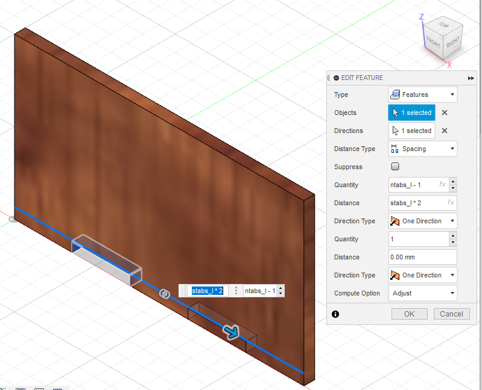

Fusion 360
Fusion 360 is a cloud-based CAD,CAM and CAE software which combines organic shapes modelling and designing. The designs can be used for both 3D printing and laser cutting which will be covered in this elective thus making this software useful. As I'm a engineering student, i took a module called Computer Adided Drawing which introduced me to softwares like AutoCAD and AutoDesk Inventor. Since AutoCAD and AutoDesk inventor share similiar features with Fusion 360, i was expected to familiarise myself with Fusion 360.
Drawing Practises
Drawing practise 1
Drawing practise 2
3D Model: Name Tag
First we sketch the shape for the base of the name tag,once done extrude to a height of 2mm.
Next on the same surface, we create a new sketch and use the text function to key in the name. Once done extrude to a height of 1mm.
3D Model: Nut
First we sketch a pentagon which is a five-sided polygon. Once done extrude to a heigh of 10mm.
Next we draw a triangle on the pentagon. Once done use the revolve function to obtain the chamfer.Construct a plane in the middle of the nut and use the mirror function to obtain chamfer on bottom part of nut.
Last but not least, we add the threaded hole for the nut.
3D Model: Lego brick
3D Model: Chess Piece Knight
For modelling the knight piece we can use a temple by insert > canvas, we can then start sketching with reference to the canvas. Once down use the revovle function for the base of the knight piece and extrude symmetric of thickness 5mm for the body of knight piece.
Next we do a sketch for the gap between the ears by first constructing a plane tangent to the ears. Once done do a extrude cut to obtain the gap between the ears.
Last but not last, we sketch the mane for the knight piece. Once done extrude it to the thickness of the gap between the ears which is 1.25mm
Completed knight piece
These are the parameters for the music box. We use parametric design so we can adjust the thickness of the music box when we are doing the lasering cutting.
First we do a rectangle sketch and extrude the sketch to the thickness length.

Next we do a tab cut on the length of the music box as shown below followed by rectangular pattern and pattern it along the length.

The same was done to cut out the tab for the width of music box followed by rectangular pattern.
Moving onto a new component of the music box, we first make a sketch according to the parameters and then we extrude it to the thickness length.
We cut out a tab on the width of the music box followed by rectangular pattern.
In orrder to mirror the feature we first contrust a mid-plane and then we mirror the feature over.
The same has been done to the front plate.

To get the remaining tabs, we can use the combine tool.Using the front plate and its mirror as tool bodies and keeping tools, the tabs are cut out of the side plate.
Completed music box